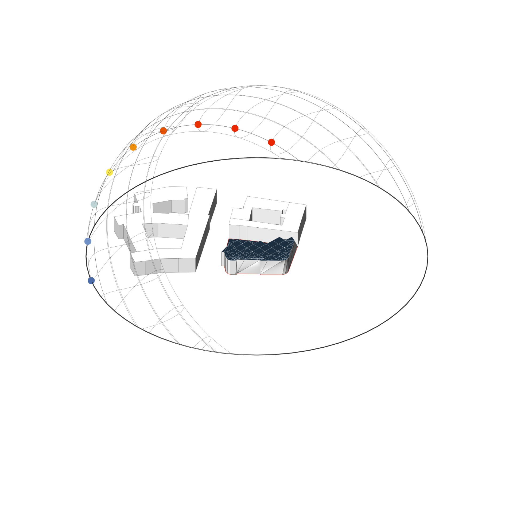
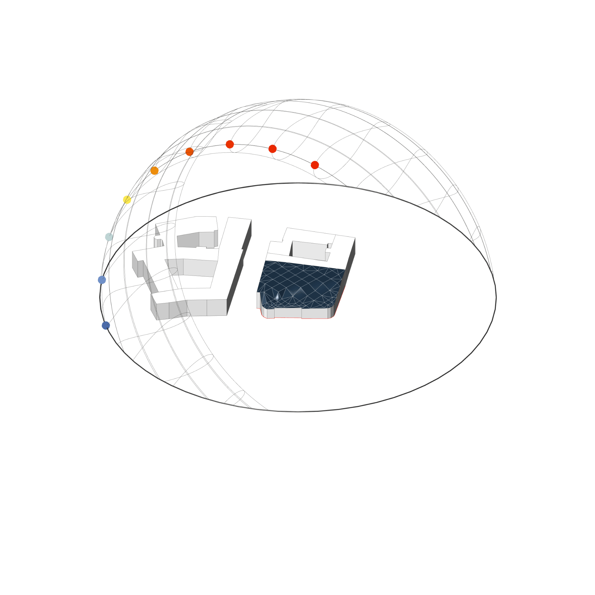
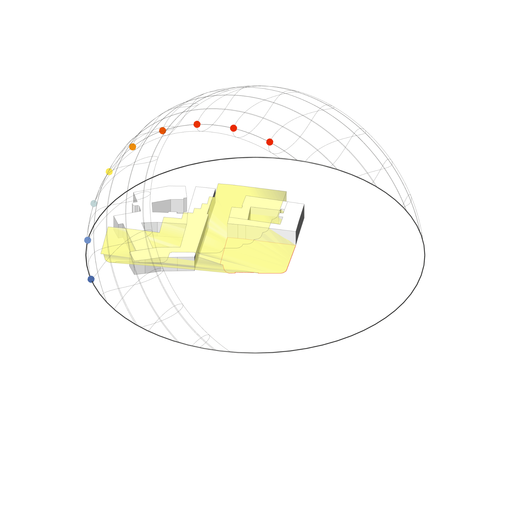

Solarhülle + Solarfächer
Ladybug
⬤ Ladybug berechnet Solar Rights Envelopes – bebaubare Volumina durch virtuelle Verschattungskörper. Definiert präzise, wo Neubauten möglich sind, ohne Solarstrahlung auf Nachbarflächen (PV, Fenster) unter kritische Schwellwerte zu drücken. Saisonale Differenzierung: Wintersonne für Heizgewinne vs. Sommersonne gegen Überhitzung. Basierend auf Altitud- und Azimutwinkeln. Ideal für Urban Design, PV-Flächensicherung und Nachbarschaftskompatibilität nach EN 17037 sowie Solarkataster-Vorgaben.
⬤ Ladybug calculates solar rights envelopes – buildable volumes through virtual shading bodies. Precisely defines where new buildings are possible without reducing solar radiation on neighboring areas (PV, windows) below critical thresholds. Seasonal differentiation: winter sun for heating gains vs. summer sun against overheating. Based on altitude and azimuth angles. Ideal for urban design, PV area security, and neighborhood compatibility according to EN 17037 and solar cadastre specifications.